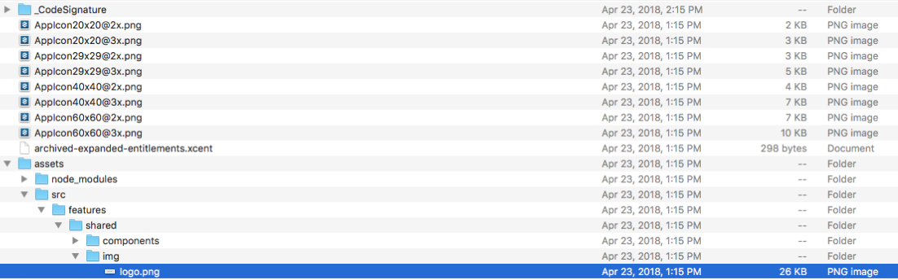
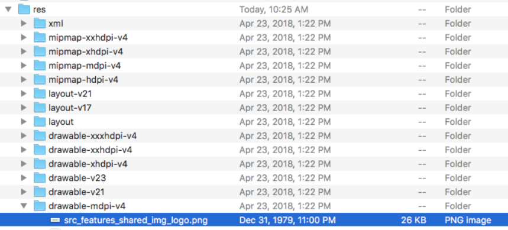

For customers re-signing the application, we provide unsigned builds.
This topic provides information on:

Resign your target ipa with this command:
fastlane run resign \
ipa:path/to/your/file.ipa \
signing_identity:"iPhone Distribution: <Your Team Name>" \
provisioning_profile:$HOME/Library/MobileDevice/ Provisioning Profiles/<your profile GUID>.mobileprovision \
display_name:EMS-Resigned
NOTE: If you want a bash scrip that will do this, copy this into a file (e.g., resign_enterprise.sh):
#!/bin/bash
IPA=relative/path/to/file.ipa
IDENTITY="iPhone Distribution: <Your Team Name>"
PROFILE=$HOME/Library/MobileDevice/Provisioning Profiles/ <your profile GUID>.mobileprovision
DISPLAY_NAME=EMS-Resigned
fastlane run resign ipa:"$IPA" signing_identity: "$IDENTITY" provisioning_profile:"$PROFILE" display_name: $DISPLAY_NAME

IMPORTANT: Assets, Res, and AndroidManifest.xml are top-level files in an .apk. Please ensure you are zipping the correct files.
zip -qr ../ems-custom-44.1.xxx.zip ./*
#!/bin/bashAPK_TO_SIGN=$1APK_OUTPUT=$2EMS_APK_KEYSTORE_PATH=path/to/your/app.keystorejarsigner -verbose \-sigalg $EMS_APK_SIG_ALG \-digestalg $EMS_APK_DIGEST_ALG \-storepass $EMS_APK_KEYSTORE_PASS \-keystore $EMS_APK_KEYSTORE_PATH \$APK_TO_SIGN $EMS_APK_ALIAS_NAMEzipalign 4 $APK_TO_SIGN $APK_OUTPUT
Note: EMS recommends that you use an image with a 3:1 aspect ratio in order to ensure that the image will be properly rendered by the application.